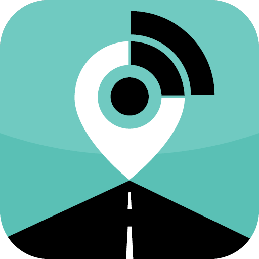
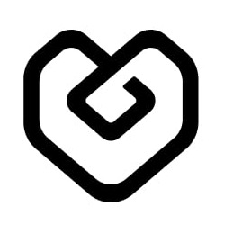

Hi, I'm Shubham Dudhal!
Product Manager driven by customer empathy, intuitive workflow design, and high-impact product execution. I specialize in uncovering root-cause user pain, eliminating friction through user-centered UX, and aligning cross-functional teams to build software people rely on daily. My Computer Science background directly strengthens my product craft—enabling me to assess technical feasibility early, partner seamlessly with engineers without translation loss, and deliver reliable, edge-case-hardened solutions.
Ask Shubham’s Career Copilot
2 Free Questions LeftCompanion AI agent trained on Shubham's real PRDs, telemetry architecture, and startup metrics.
How I Build: The Product Lifecycle
A PM's job goes far beyond writing specs. Here is how I navigate problem discovery, UX architecture, engineering collaboration, and QA sanity to ship reliable software.
Problem Discovery & Root-Cause Signal
Uncovering the operational reality beneath feature requests. Shadowing fleet dispatchers, analyzing error telemetry, and defining explicit non-goals.
UX Discovery & Workflow Mapping
Minimizing cognitive load in high-stress environments. Eliminating multi-tab fatigue by mapping natural operator mental models and zero-ambiguity action states.
Technical Feasibility & Alignment
Leveraging technical fluency to support product vision. Partnering early with engineering on API contracts, latency trade-offs, and data schemas to de-risk delivery before coding.
Sprint Execution & Cross-Squad Delivery
Translating strategy into unblockable, atomic Jira stories with Gherkin acceptance criteria (Given/When/Then). Unblocking developers and resolving scope trade-offs.
QA Sanity, Edge Cases & Rollout Gates
Hardening software for real-world chaos: testing offline network dropouts, stale cache states, and setting strict telemetry gates (<1.5s P95) before GA rollout.
Featured Case Studies
5 In-Depth PM Deep DivesEnd-to-end execution across problem statements, UX discovery, technical trade-offs, and measurable outcomes
Fleet AI Query Assistant
Identified multi-tab operator triage fatigue (4.2 min/alert) and architected an MCP-based natural language query tool over Redis telemetry caching, cutting operator triage time by 75% with zero relational DB connection starvation.
SprintZero: AI Developer Induction
Automated developer induction system taking new hires from Day 1 to shipping their first production PR in 10 days, cutting senior mentoring tax by 85% (30-40h → <4h) with automated AI gatekeeping.
Voice AI Driver Safety Intercom
Mapped in-cabin noise contexts, vernacular speech journeys, and deterministic fail-safe state machines using LiveKit WebRTC for critical sub-second driver drowsiness intervention.
Catalogue Cloud & SKU Variant Engine
Architected parent-child SKU variant mapping rules and schema validation for Netmeds and JioMart, slashing catalog synchronization errors by 30-40%.
LinkedIn Mentorship Network
Conducted 25+ user interviews unpacking why 95% of cold mentorship messages fail, followed by an interactive prototype for 15-minute structured micro-mentorship tracks.
Key Experience
5 Roles • 0-to-1 & ScaleTrack record of driving product strategy, cross-squad execution, and operational impact across telematics, AI, and enterprise commerce


The PM Craft & Execution Vault
Interactive PRD & SpecsAnatomy of how I structure end-to-end product delivery — from root-cause discovery to UX flows, technical schemas, QA sanity, and rollout telemetry.
Why are we building this? (The User & Business Friction)
Commercial fleet supervisors manage between 500 and 3,000 active assets. During field shadowing, I observed operators spending an average of 4.2 minutes per alert cross-referencing three separate UI tabs (Vehicle Location, Fuel Sensor Logs, Driver Rosters) to diagnose basic operational issues like idling or fuel drops. This lag delayed urgent route and safety interventions.